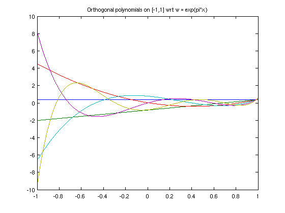
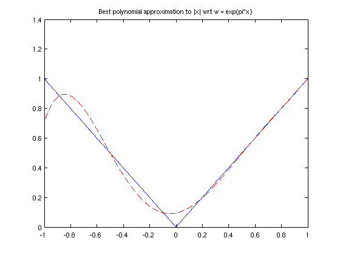

Orthogonal polynomials via the Gram-Schmidt process
Nick Hale, June 2011
(Chebfun example approx/OrthPolys.m)
function OrthPolys
Orthogonal polynomials are, as the name might suggest, polynomials which are orthogonal to each other in some weighted L^2 inner product, i.e.,
b
/
| w(x) P_j(x) P_k(x) dx = < P_j, P_k > = 0 for all j not equal k
/
aIf we normalise so that < P_j, P_j > = 1, the polynomials are called "orthonormal".
Chebfun has commands built-in for some of the standard orthogonal polynomials. Below is a table of the polynomial, the weight function, the standard domain [a b], and the Chebfun routine name.
Name | w(x) | domain | Chebfun routine ------------------------------------------------------------------- Legendre | 1 | [-1 1] | LEGPOLY(N) Chebyshev(1st) | 1/sqrt(1-x^2) | [-1 1] | CHEBPOLY(N) Chebyshev(2nd) | sqrt(1-x^2) | [-1 1] | CHEBPOLY(N,2) Laguerre | exp(-x) | [0 inf] | LAGPOLY(N) Hermite | exp(-x^2) | [-inf inf] | HERMPOLY(N)
For each of the examples above there are readily computed recurrence relations which allow fast computation of the polynomials, and Chebfun exploits these. However, sometimes we wish to construct orthogonal polynomials with non-standard weight functions, and orthogonalisation via the Gram-Schmidt process is one method of doing so.
The process (sometimes referred to as the "Stieltjes process") iteratively constructs the next degree polynomial by removing the components in the directions of the previous ones. This can be expressed as
P_{k+1} = x^{k+1} - SUM(< x^{k+1},P_j >/< P_j,P_j > * P_j).In practice one usually replaces x^{k+1} by x*P_k or the k+1th Chebyshev polynomial to improve stability.
The short code below demonstrates these ideas by computing the first 5 orthonormal polynomials with respect to the weight function w = exp(pi*x).
x = chebfun('x',[-1 1]); w = exp(pi*x); N = 5; P = OrthPoly(w,N); function P = OrthPoly(w,N) if isnumeric(w), w = chebfun(w,[-1 1]); end d = w.ends; % The domain x = chebfun('x',d); % Linear chebfun P(:,1) = chebfun(1./sqrt(sum(w)),d); % The constant (normalised) for k = 1:N; % xk = x.^k; xk = x.*P(:,k); P(:,k+1) = xk; for j = 1:k % Subtract out the components C = sum(w.*xk.*P(:,j)); P(:,k+1) = P(:,k+1) - C*P(:,j); end P(:,k+1) = P(:,k+1)./sqrt(sum(w.*P(:,k+1).^2)); % normalise end end
We can now plot these polynomials
figure
plot(P)
title('Orthogonal polynomials on [-1,1] wrt w = exp(pi*x)');
 and confirm that they are orthogonal
W = repmat(w,1,N+1); I = P'*(W.*P); err = norm(I-eye(N+1))
err =
1.744895157480735e-14
One useful application of orthogonal polynomials is to find best polynomial approximations in the norm associated with the L^2 inner-product space associated with w(x), with
P*_n = SUM( < f, P_j >*P_j ).
Here we do this with w as above and approximate f(x) = abs(x);
f = abs(x); alpha = zeros(N+1,1); for k = 0:N alpha(k+1) = sum(w.*P(:,k+1).*f); end P_star = P*alpha; figure plot(f,'b',P_star,'--r') title('Best polynomial approximation to |x| wrt w = exp(pi*x)');
Notice how the approximation is better for larger x, as w(x) = exp(pi*x) gives more weight to the error introduced there.
end